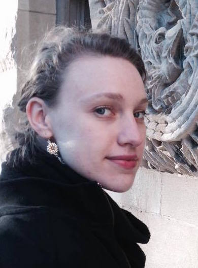

I am the Communications & Events Manager at The Language Conservancy, a non-profit organization that provides support to endangered languages.
Check out our documentary, Rising Voices/Hótȟaŋiŋpi, which premiered on public television in November 2015.
I graduated from McGill University in 2015 with an M.A. in linguistics. My thesis can be found on this page.